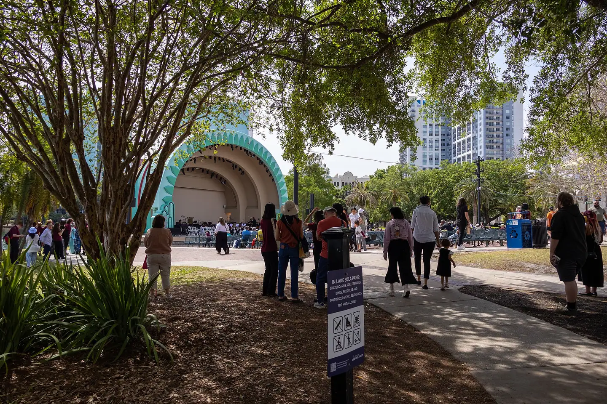

Lake Eola Park
Downtown
The city's front porch: a 0.9 mile sidewalk loop, swan shaped pedal boats, the Walt Disney Amphitheater, a playground, and the Orlando Farmers Market on Sundays.
407 FYI · Parks & Gardens
407 FYI · A Parks and Gardens GuideLake loops for morning miles, a dog park with a bar tab, gardens that go quiet, and the shorelines where the city watches the light change.
Every place on this page is a guide listing and links to its own page. The set is short on purpose: these are the parks the guide has verified and listed, organized by what you would actually do there.
The Walt Disney Amphitheater at Lake Eola Park. Photo: “Walt Disney Amphitheater at Lake Eola Park, March 2025” by Nielsoncaetanosalmeron, CC BY 4.0, via Wikimedia Commons.

The Local Frame
Orlando is a city of lakes, and its parks are where the theme park version of the city gives way to the lived one: a loop before work, a dog in the water, a garden bench with nobody else on it.
The guide's park bench starts with two anchors, Lake Eola Park downtown and Mead Botanical Garden in Winter Park, and runs from there to a sculpture garden, a Lake Jesup boardwalk, a dog park bar, a boat tour that has run since 1938 and a food park with a dog run of its own. Rather than dress that bench up as deeper than it is, this page sorts the listings by use, so the right park for the day you want is easy to find.
Start Here
The parks and gardens the guide lists today, each with the job it does best.
Downtown
The city's front porch: a 0.9 mile sidewalk loop, swan shaped pedal boats, the Walt Disney Amphitheater, a playground, and the Orlando Farmers Market on Sundays.
Winter Park
Winter Park's wilder garden: 47.6 acres of boardwalks, ponds and trails, a butterfly garden, Alice's Pond and a Discovery Barn, with a spot on the Great Florida Birding Trail. Dogs on leash.
Winter Park
A sculptor's historic home on Lake Osceola, where the garden is the gallery: sculpture among tropical plantings, a butterfly garden and water gardens. Art and quiet in equal measure.
Oviedo
A small Seminole County park on the south shore of Lake Jesup: a fishing pier, a shaded picnic pavilion, and Clifton Springs flowing through it. The county rebuilt the boardwalk and reopened the park in 2026.
Ivanhoe Village
A private dog park bar and a full restaurant in one: off leash yards and pup pools for the dog, dinner and drinks for the people. Dogs check in with a day pass or a membership; humans enter free.
Winter Park
The guided way onto the Winter Park chain of lakes: hour long pontoon cruises from the dock at the east end of Morse Boulevard, through the canals past Rollins College. Running since 1938.
Lake Nona
An open air food park built from shipping containers, with a stage, a lawn and a dog park of its own: Lake Nona's green, with dinner attached.
By Use
The guide's running addresses are a lake loop and a garden trailhead. The long rail trails get their own treatment with the trails and springs coverage; here is what the listed parks offer today.
By Use
One private, full service dog park bar carries this section, with listed parks where a leashed dog or a dog run fits the day around it.
By Use
Playgrounds, boats and room to roam, drawn from the listed parks.
By Use
The listed garden bench: one wilder garden, one sculpture garden, and one boardwalk built for quiet.
By Use
The guide's lake access runs guided and rented rather than ramp first. Here is what the listed places actually put you on the water.
By Use
One classic from the listed parks, and one honest correction.
The Connectors
Two trail systems stitch the listed parks together. The Orlando Urban Trail runs about 3 miles of mostly off street path from Lake Highland through Loch Haven Park to Mead Botanical Garden, and the city calls it the spine of its trail network. The Cady Way Trail runs 7.2 paved miles between Orlando and Winter Park, with a loop of about 2.5 miles circling Lake Baldwin along the way.
The longer systems, the West Orange Trail, the Seminole Wekiva Trail and the Little Econ Greenway, belong with the guide's trails and springs coverage, alongside the two springs at the swim and paddle end of the parks story: Kelly Park / Rock Springs Run, where the spring run pours into a lazy channel made for tubing, and Wekiwa Springs State Park, an emerald spring feeding the Wekiva River. The parks are the doors; those are the rooms beyond them. The rooms now have a page of their own: The Wild Side.
Answers only from the guide's own listings.